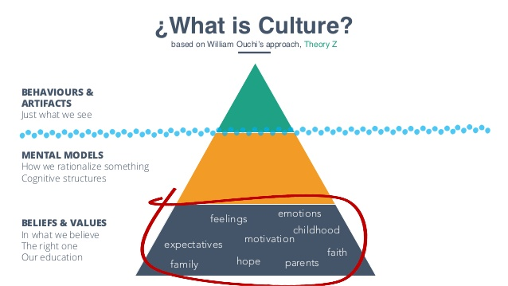
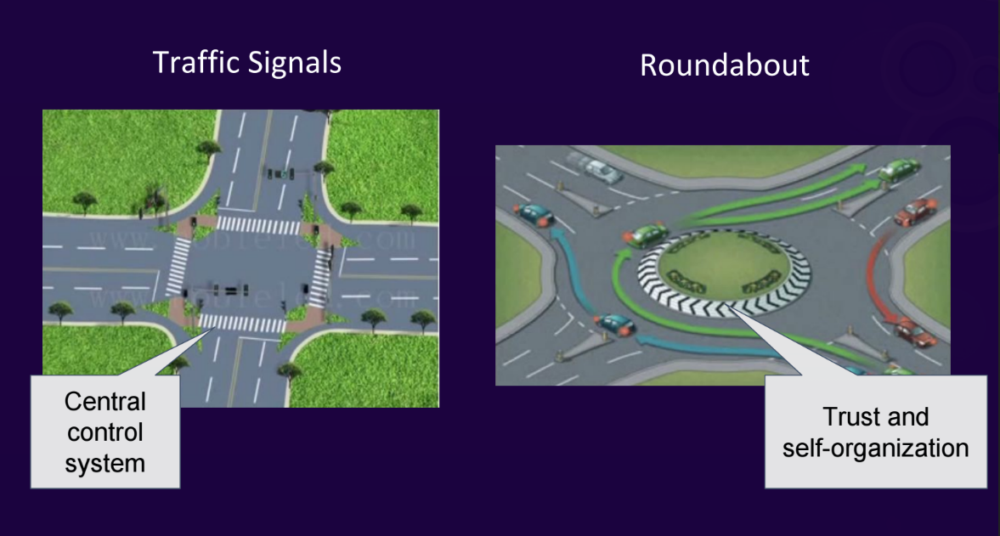
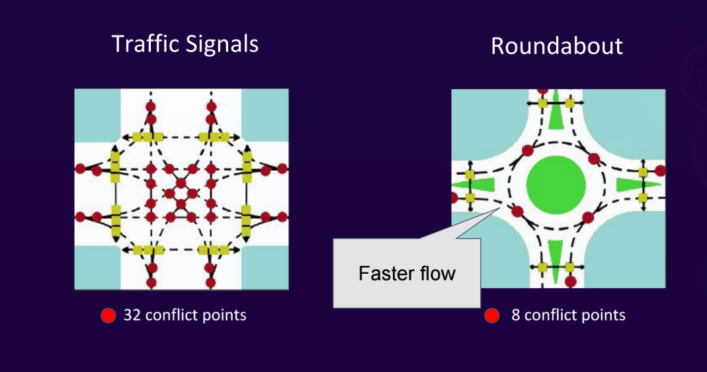
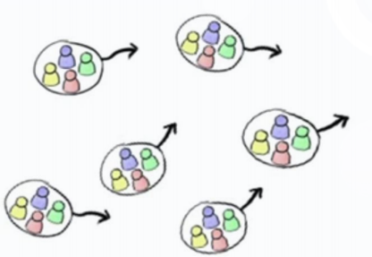
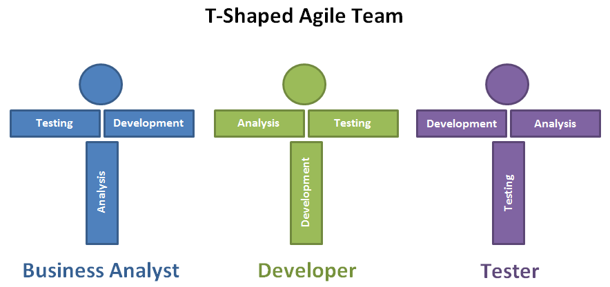

Agile culture
How to be successful
Agenda
People
Main Agile concepts
Shift-left QA
Making Mistakes
Why DevOps?
“you’re not agile; you’re actually mini-waterfall”~ Alister Scott
SDLC
If your SDLC looks like this:

You are doing it wrong!
You want to maximize your productivity?
- Fixed release schedule
- Fixed resources
- Way too much to finish
- Failure = Demotion, Job loss, or Pariah status
What is productivity?
- Work accomplished
- Work required to fix defects
- Work required to fix bad design decisions
It is possible for productivity to be negative when workers end up doing more harm than good.
What is productivity?
Productivity =
Effort X Competence X Environment X (2 X Motivation)
Trust > Control
Trust is more powerful than Control
We Trust You
- Assume that people WANT to act in the best interest of the company
- This is a self-fulfilling assumption!
- Manage for the normal, threat exceptions as exceptional.
- What are you doing? VS What do you need?
More Agile teams
Projects are handeld by small cross-functional teams Re-think the teams
Jr. breadth tasks on rotation within the teams.
Agile Estimates
-
What percentage of team capacity should be officially scheduled?
- 110% to promote people to “stretch”?
- 100% because that is what they can do?
- 80% because slacking is good?
Agile Estimates
-
Scheduling at 80% produces better products
- Scheduling people at 100% doesn’t give space to think of creative solutions
- Not lost time - Passionate workers keep thinking
- The 20% goes into new idea generation and process improvements...or testing..ha-ha
- Producing 20 great features is usually far more profitable than producing 100 competent features
Making Mistakes
- Failure Recovery > Failure Avoidance
- Fail fast => Learn fast => Improve fast